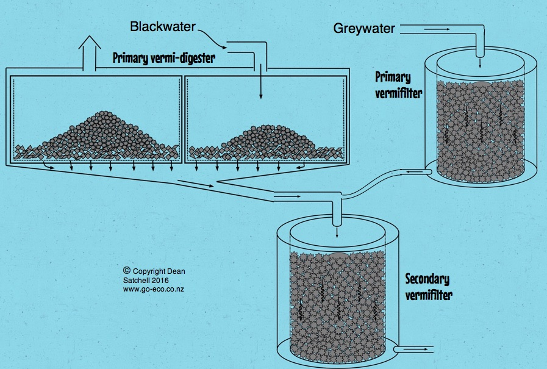
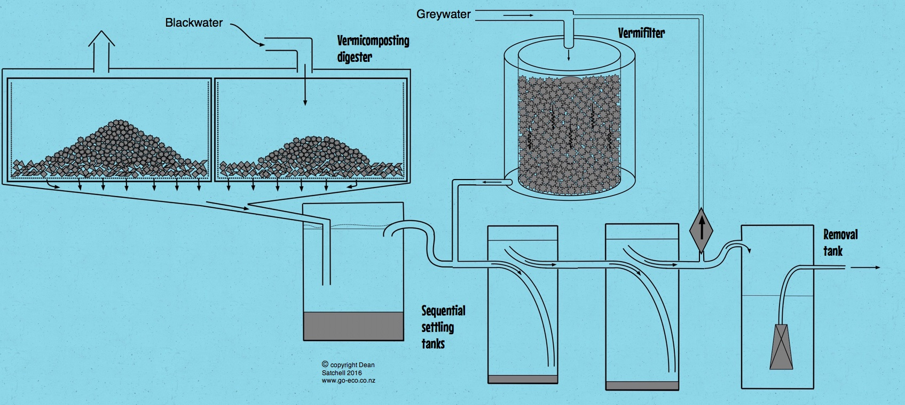

Secondary
vermifilter for treating domestic greywater (including kitchen waste)
and domestic blackwater
(from toilet after primary digestion). Above shows two sequential vermifilters
(i.e. in series), each
vermifilter improving the level of effluent treatment. This is a passive (gravity operated) system.

Domestic
wastewater treatment system including primary and secondary treatment
with vermifilters.
This is a passive system with the secondary vermifilter above ground level. The treated effluent is then
discharged via a dosing system to leach fields using Low Pressure Effluent Distribution (LPED) emitters.

Domestic
wastewater treatment system including primary and secondary treatment
with vermifilters.
A small pump circulates wastewater through the vermifilter for continuous treatment to ensure secondary
treatment levels are achieved. Suspended solids are settled so no additional filtration is required.
This system is suitable for flat sections where a passive gravity system is unsuitable. A removal pump
uses a float switch to dose surface effluent lines with treated effluent. Alternatively, treated effluent is
discharged via gravity to subsurface effluent fields.